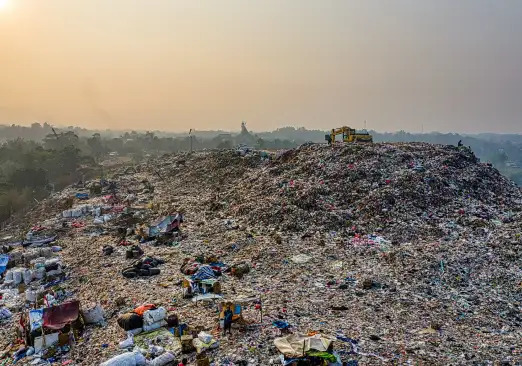

About Us
The Eco - Trader is a technology-driven company working on SaaS (Software as a Service) based model to
organize the waste
management sector.
We are likely to create more and more opportunities for the people who are willing to make their effort
in building a peaceful and pollution free environment.
Founders Message
“Waste is never a waste, it’s rather an opportunity to something new”
The unorganized sector made it a task for company to sell his own household scrap, it is then that
he
decided to infuse technology into the sector making it easy for thousands of consumers to sell scrap
online.
But, this wasn’t enough to mark a significant impact, on households So , the Eco-Trader start
one-stop solution
for customer.
Eco-trader is introduced to address the problems that India is facing in the scrap industry. India
generates an estimated 25 million tonnes of scrap annually, which is expected to double by 2025.
However, the country lacks efficient scrap management practices, resulting in environmental and
health hazards. Open burning of scrap releases harmful gases and particulate matter, causing health
problems such as cancer and neurological disorders.
Our Core Values
Vision
Our vision for Eco Trader is to create a user-friendly and transparent platform that connects buyers
and sellers of scrap materials, facilitating efficient and sustainable transactions.
Mission
Our mission is to revolutionize the scrap industry by creating a platform that connects the two
parties and provides a sustainable solution for individuals and businesses to sell and purchase
scrap material.
Goal
Through continuous innovation of technology, our goal is to make recycling achievable and accessible
to all, from institutions to individuals.
Our Belief
We believe that India can be a greener and cleaner country, as every household commits to getting their dry
scrap recycled, not only resources can be saved from over-exploitation, but the landfills with mixed harmful
garbage can be eradicated.

Minimizing landfills
- Landfills are spreading across India at a fast pace making it more complex each day to manage the waste management value chain.
- But, this can be tackled only when we start waste management from our homes in the way of waste segregation. Waste segregation is the process of differentiating dry and wet waste and disposing of it into two different bins.
- We get the dry segregated waste recycled as you sell your scrap to us. If we inculcate the habits of “avoiding tossing trash anywhere” and “adopting daily waste segregation”, remember we’re coming one step ahead in reducing landfills.
Maximizing Recycling
- To mark a larger impact, along with serving households, The Eco-Trader is a recycling partner to small to big businesses and corporates to institutions with the aim to build a conscious ecosystem on a societal level.
- EcoTrader helps to ensure that more scrap is diverted from landfills and put back into the recycling stream. This promotes a more sustainable approach to waste management and helps to reduce the environmental impact of scrap generation.
The Eco-Trader brings you
Transparency
Our App enables users to access the impact marked through the waste sold and recycled in terms of
resources and energy saved.
Traceability
By providing robust traceability, EcoTrader can increase trust and confidence in the scrap industry,
and encourage more sustainable and ethical practices.
Scalability
Scalability is a critical factor in ensuring that EcoTrader remains a reliable and effective
solution for the scrap industry, both now and in the future.
The Way Forward
We look forward to creating an ecosystem within the social system that of conscious waste disposal
behavior, increased awareness that promotes waste segregation at source, and enthusiasm towards
recycling as one of the effective waste solutions in India.